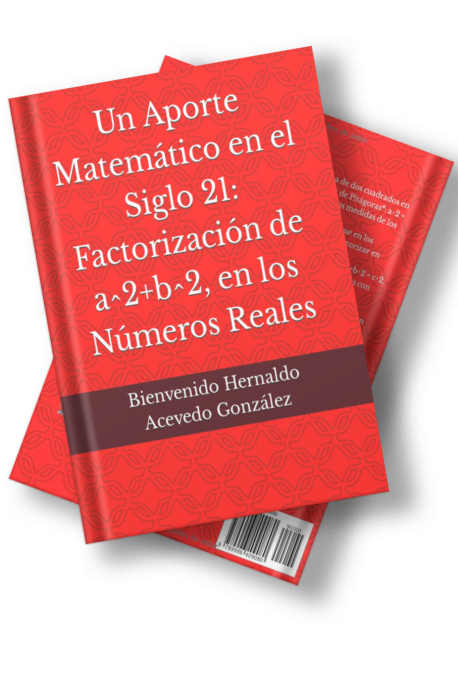
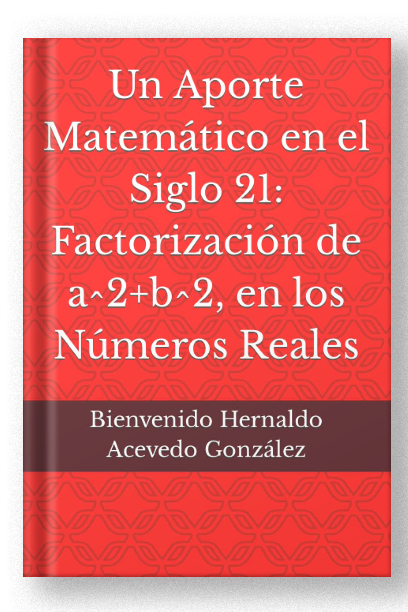

El libro consta de ocho capítulos. A continuación, se describe la idea central de cada capítulo:
En el Capítulo I; Se menciona el origen de las leyes matemáticas, su definición, sus características, sus fuentes y su importancia.
En el Capítulo II: Se presentan breves relatos de la vida y obra de Pitágoras y su influencia hasta nuestros días.
En el Capítulo III: Se define el Teorema de Pitágoras, y se demuestra geométrica y numéricamente.
En el Capítulo IV: Se dice como leer, se definen conceptos de geometría y figuras geométricas, y se describen los conjuntos numéricos.
En el Capítulo V: Se define la Suma de Dos Cuadrados a^2+b^2, se explica porque actualmente, los matemáticos dicen que a^2+b^2, es irreducible en los Números Reales, es decir, no se puede factorizar en los Números Reales.
En el Capítulo VI: Se presentan las fórmulas "bienve1" y "bienve2" con sus respectivas demostraciones geométricas y numéricas, mediante las cuales se puede factorizar a^2+b^2 en los Números Reales.
En el Capítulo VII: Se muestran los ejemplos de la aplicación de las fórmulas "bienve1" y "bienve2", para la factorización de a^2+b^2 en los Números Reales.
En el Capítulo VIII: Se presentan las conclusiones del libro.
Las leyes matemáticas son el fundamento sobre el que se construye todo el edificio del conocimiento matemático. Su origen se remonta a la antigüedad, cuando las primeras civilizaciones comenzaron a sistematizar el conocimiento numérico y geométrico.
Las características principales de las leyes matemáticas son su universalidad, su consistencia lógica y su capacidad de ser demostradas formalmente a partir de axiomas básicos.
Pitágoras de Samos (c. 570 – c. 495 a.C.) fue un filósofo y matemático griego. Fundó el movimiento pitagórico, cuyos miembros creían que todo está relacionado con las matemáticas.
Su influencia se extiende hasta nuestros días a través del famoso teorema que lleva su nombre, aunque hay evidencias de que culturas anteriores ya conocían esta relación.
El Teorema de Pitágoras establece que en todo triángulo rectángulo, el cuadrado de la hipotenusa es igual a la suma de los cuadrados de los catetos:
a² + b² = c²
Esta relación se puede demostrar de múltiples formas, tanto geométricamente como algebraicamente, y constituye la base del trabajo presentado en este libro.
Las fórmulas "bienve1" y "bienve2" permiten factorizar la Suma de Dos Cuadrados a²+b² en los Números Reales, demostrando que dicha suma sí es reducible.
Bienve1 a² + b² = (a+b)² − 2ab
Bienve2 a² + b² = (a−b)² + 2ab
Ambas fórmulas se demuestran geométrica y numéricamente en el libro con ejemplos detallados.
Las conclusiones de este libro representan un aporte significativo al conocimiento matemático del Siglo 21, demostrando que la Suma de Dos Cuadrados a²+b² sí puede factorizarse en los Números Reales.
Este descubrimiento abre nuevas perspectivas en el campo del álgebra y la factorización, y constituye un legado del autor para las futuras generaciones de matemáticos.